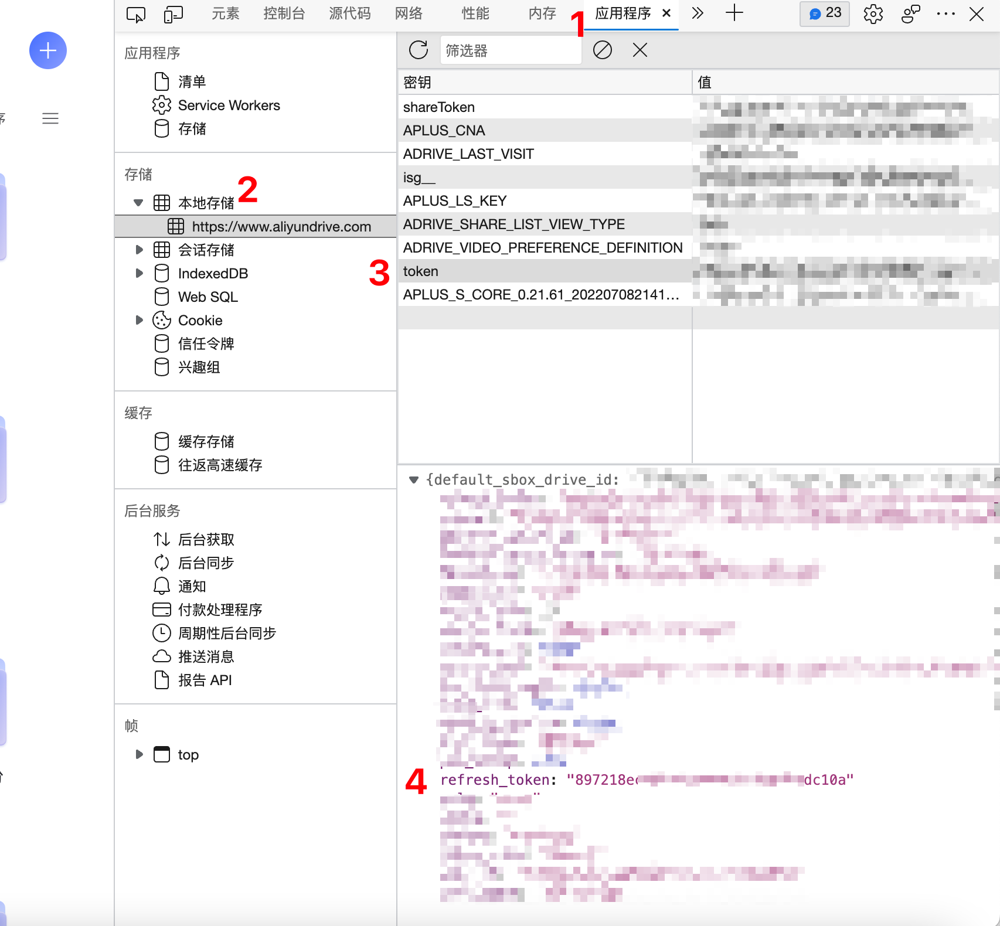

使用Alist搭建文件存储系统
Contents
使用Alist搭建文件存储系统
使用Alist搭建文件存储系统
1. Alist介绍
Alist是 一个支持多存储的文件列表程序 ，已经在github上开源，并且有丰富的论坛内容。alist支持多种网盘，本篇博客将使用alist + 阿里云盘进行部署。
值得注意的是使用阿里云盘作为文件存储网盘，并提供给他人使用，存在一定的风险导致封号。如果不提供给他人使用，可以降低封号的风险(几乎没有风险)。
2. 部署Alist服务
2.1 使用Docker部署Alist
|
|
docker运行成功后可以在浏览器中输入ip:5244打开Alist网址，此时的Alist仅仅是部署成功，还需要修改一些配置
2.2 使用Docker查看密码
Alist启动后首次登陆使用了随机密码进行初始化，可以通过一下命令查看初始化密码
|
|
3. 修改Alist配置
3.1 修改后段设置
进入Alist管理页面后以此点击 设置–>后端
修改密码
修改webDav 用户名
修改webDav 密码
开启允许搜索
3.2 添加阿里云盘账号
进入Alist管理页面后以此点击 设置–>账号
- 点击添加账号，并选择阿里云盘
- 添加虚拟地址，我填写的是ali
- 开启代理和webDav代理
- 填写刷新令牌，并点击保存
3.3 获取阿里云盘token
- 登陆阿里云盘网页版
- 点击F12，进入开发者模式
- 选择application(应用程序)
- 选择本地存储
- 点击token，其中的refresh_token就是我们需要的刷新令牌

此时我们再次进入Alist 的页面就会默认进入文件系统，网页可以预览图片，文档和视频，也可以通过外置的播放器播放视频，想要再次进入管理系统可以点击页面底部的管理按钮
4. 集成webDav
如果你喜欢使用webDav管理文件，只需要在webDav管理软件中添加ip:4244/dav，并输入3.1中设置的webDav账号密码即可。